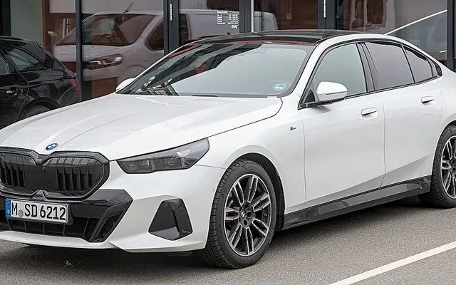

Par Motor › Precios por modelo › BMW Serie 5
Precio de segunda mano · noviembre de 2026¿Cuánto vale un BMW Serie 5 de segunda mano?

Precio justo estimado de un BMW Serie 5 usado en España, año por año, con los kilómetros normales para su edad y en buen estado: de 7.100 € a 66.400 €. Para tasar el tuyo con sus kilómetros reales y su estado, usa el tasador gratis.
Precios del BMW Serie 5 por año
Serie 5 E60 (2003–2010)
Precio de nuevo: 520d 177 CV, 42.000 € · 523i 190 CV, 43.000 € · 525d 197 CV, 47.000 €
| Año | Km normales | 520d 177 CV · Diésel | 523i 190 CV · Gasolina | 525d 197 CV · Diésel |
|---|---|---|---|---|
| 2010 | 100.000 km | 12.300 € | 13.000 € | 13.800 € |
| 2009 | 100.000 km | 11.400 € | 12.000 € | 12.700 € |
| 2008 | 100.000 km | 10.500 € | 11.100 € | 11.700 € |
| 2007 | 100.000 km | 9.700 € | 10.200 € | 10.900 € |
| 2006 | 100.000 km | 9.000 € | 9.500 € | 10.000 € |
| 2005 | 100.000 km | 8.300 € | 8.700 € | 9.300 € |
| 2004 | 100.000 km | 7.700 € | 8.100 € | 8.600 € |
| 2003 | 100.000 km | 7.100 € | 7.500 € | 7.900 € |
La cadena de distribución está en la parte trasera del motor y se desgasta o se rompe; para cambiarla hay que sacar el motor, así que la factura es alta. Un silbido o ruido de cadena con el motor en marcha es la señal. Pregunta si se cambió la cadena.
Serie 5 F10 (2010–2017)
Precio de nuevo: 518d 150 CV, 43.000 € · 520i 184 CV, 45.000 € · ActiveHybrid 5 340 CV, 65.000 €
| Año | Km normales | 518d 150 CV · Diésel | 520i 184 CV · Gasolina | ActiveHybrid 5 340 CV · Híbrido |
|---|---|---|---|---|
| 2017 | 100.000 km | 21.800 € | 20.600 € | 31.200 € |
| 2016 | 100.000 km | 20.200 € | 19.900 € | 30.100 € |
| 2015 | 100.000 km | 18.700 € | 19.100 € | 29.000 € |
| 2014 | 100.000 km | 17.300 € | 18.400 € | 27.900 € |
| 2013 | 100.000 km | 16.000 € | 17.200 € | 26.100 € |
| 2012 | 100.000 km | 14.700 € | 15.900 € | 24.100 € |
| 2011 | 100.000 km | 13.600 € | 14.700 € | 22.300 € |
| 2010 | 100.000 km | 12.600 € | 13.600 € | 20.600 € |
La cadena de distribución está en la parte trasera del motor y se desgasta o se rompe; para cambiarla hay que sacar el motor, así que la factura es alta. Un silbido o ruido de cadena con el motor en marcha es la señal. Pregunta si se cambió la cadena.
Serie 5 G30 (2017–2023)
Precio de nuevo: 520i 184 CV, 52.000 € · 520d 190 CV, 52.000 € · 530e (enchufable) 292 CV, 60.000 €
| Año | Km normales | 520i 184 CV · Gasolina | 520d 190 CV · Diésel | 530e (enchufable) 292 CV · Híbrido enchufable |
|---|---|---|---|---|
| 2023 | 50.000 km | 38.200 € | 36.700 € | 39.700 € |
| 2022 | 65.000 km | 35.300 € | 31.200 € | 36.700 € |
| 2021 | 80.000 km | 31.300 € | 28.500 € | 32.500 € |
| 2020 | 95.000 km | 27.100 € | 28.100 € | 28.200 € |
| 2019 | 100.000 km | 25.400 € | 27.600 € | 26.300 € |
| 2018 | 100.000 km | 24.600 € | 27.000 € | 25.500 € |
| 2017 | 100.000 km | 23.800 € | 26.300 € | 24.700 € |
Serie 5 G60 (2023–hoy)
Precio de nuevo: 520i 208 CV, 62.000 € · 520d 197 CV, 63.000 € · 530e (enchufable) 299 CV, 72.000 €
| Año | Km normales | 520i 208 CV · Gasolina | 520d 197 CV · Diésel | 530e (enchufable) 299 CV · Híbrido enchufable |
|---|---|---|---|---|
| 2026 | 5.000 km | 63.500 € | 62.000 € | 66.400 € |
| 2025 | 20.000 km | 53.400 € | 52.100 € | 55.800 € |
| 2024 | 35.000 km | 49.300 € | 48.100 € | 51.500 € |
| 2023 | 50.000 km | 45.600 € | 44.500 € | 47.600 € |
Kilómetros normales: 15.000 al año en gasolina, híbridos y eléctricos, y 20.000 en diésel, con un máximo de 100.000 km (por encima no tasamos: el precio depende demasiado del historial de cada coche). Cifras redondeadas a 100 €.
Preguntas frecuentes
¿Cuánto vale un BMW Serie 5 de segunda mano?
Según el año, la versión y los kilómetros, un BMW Serie 5 usado vale hoy de 7.100 € a 66.400 € en España. El más barato de nuestra tabla es un 520d de 2003 (7.100 €) y el más caro un 530e (enchufable) de 2026 (66.400 €). Son precios justos estimados entre particulares y profesionales, con los kilómetros normales para su edad y en buen estado.
¿Qué motorizaciones tiene el BMW Serie 5?
En nuestra base de datos hay versiones diésel, gasolina, híbrido, híbrido enchufable y eléctrico, en 4 generaciones: Serie 5 E60, Serie 5 F10, Serie 5 G30 y Serie 5 G60.
¿Qué motores del BMW Serie 5 dan problemas?
Ojo con el BMW 2.0 diésel N47 (cadena de distribución) (520d, 518d, 525d, 2007–2014): son motores con fallos graves y muy extendidos. Antes de comprar uno, pide el historial de mantenimiento y comprueba si ya se hizo la reparación. El resto de motores no tiene problemas fuera de lo normal.
¿Cómo sé si me piden demasiado por un BMW Serie 5?
Abre el tasador de Par Motor, elige el BMW Serie 5, el año y los kilómetros reales, y escribe lo que te piden. Te diremos si está por debajo del precio justo (chollo) o por encima (caro). Es gratis y no pide registro ni matrícula.
Otros BMW
- i3
- i4
- i5
- iX
- iX1
- iX3
- Serie 1
- Serie 2 Active Tourer
- Serie 2 Coupé
- Serie 2 Gran Coupé
- Serie 3
- Serie 4
- Serie 6 y Serie 8
- Serie 7
- X1
- X2
- X3
- X4
- X5
- X6
- X7
- Z4
Compara su coste real
El precio de compra es solo una parte. Mira cuánto te costaría al mes con combustible, seguro, neumáticos, mantenimiento y lo que pierde de valor.
Abrir el comparador →